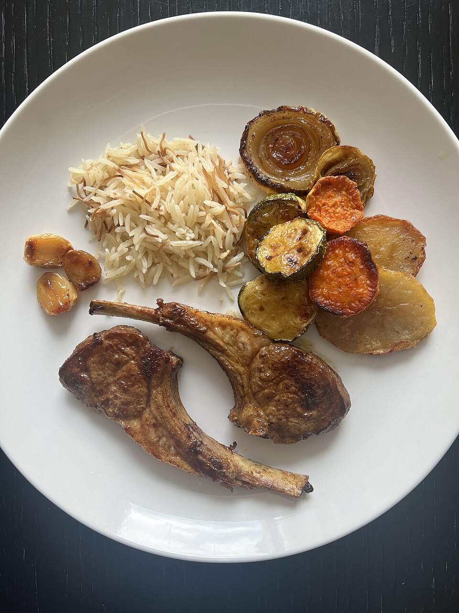

Carnes · Outros
Costeletas de cordeiro com menta fresca

Ingredientes
- 800 g de costeletas de cordeiro
- Sal e pimenta-branca
- 4 ramos de hortelã bem picada
- 200 ml de azeite
- Batata dauphinoise: ½ kg de batatas em chips, sal, pimenta, ½ noz-moscada, ½ l de creme de leite, 5 ovos batidos, 50 g de parmesão
Modo de preparo
- Tempere as costeletas e frite no azeite com parte da hortelã.
- Tempere as batatas; misture creme e ovos; despeje em refratário com queijo e asse a 180 °C ~20 min.
- Sirva as costeletas com a batata e o restante da hortelã.